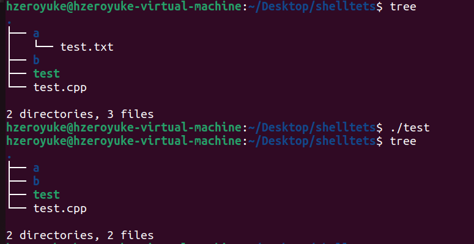
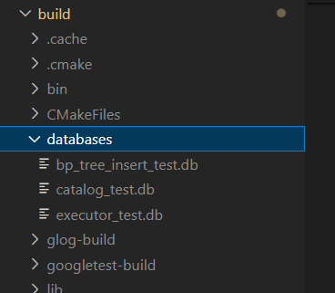

MiniSQL 概述
MiniSQL
- 这是一份关于了解MiniSQL运行机制的文档，关于自己在完成MiniSQL作业的过程中发现自己时常只是面向测试编程，不看测试就无法理解这个模块具体的行为，这实际上也严重降低我的开发效率，因此觉得需要在此实验完成之际，对于其整体架构做一遍梳理。
- 本篇文章不涉及任何MiniSQL实际需要完成的代码，仅仅帮助加深理解。
- 在阅读的过程请配合源代码阅读，本篇文章会从main.cpp开始拆解整个minisql
文件目录
1 2 3 4 5 6 7 8 9 10 11 12 13 14 15 16 17 18 19 20 21 22 23 24 25 26 27 28 29 30 | |
上述是整个minisql的src文件夹的结构，我们所有要编写的代码都在其中，与src平行的有两个相关的文件夹，分别是build和test他们分别存储了编译的结果和测试程序，其中内部基本不需要我们修改。
文件目录说明，选择一部分做出说明
- include文件夹，里面存储了所有的头文件，可见其中内部的文件夹和外部文件夹基本是一一对应关系。
-
common/和include/common/两个文件夹，内部存储了整个Minisql实验中会用的一些全局变量，enum和宏定义，也有一些简单类的实现，例如 -
RowId类的实现
- 读写锁的实现 (很遗憾我暂时还不太懂这一块的实现和应用)
自顶向下的解析
由于是完成了实验之后进行的总体解释，因此会采取自顶向下的方法，首先来看main.cpp里的内容。
首先是完成了对输入的获取，然后初始化了执行器和一个与语法树有关的对象，然后就是不断地读入和执行，这个逻辑很简单。
由于实验不需要我们深入了解语法树的部分，关键我们来看执行器的初始化。
1 | |
执行器(ExecuteEngine)里面有什么
src/include/executor/execute_engine.h 执行器当然有一堆的方法，但是我们主要来看执行器内部的变量
1 2 3 | |
很显然，其存储了一堆database的名字和其具体的DBStorageEngine，并且用std::unordered_map完成了二者的映射关系，使得我们在使用过程中可以在不同的数据库文件间切换。
接着我们来看内部的函数，我仅仅是截取了一部分，这部分我也还没完成，但是其直观的感受是，我们通过语法树完成了对于SQL命令的解析之后，调用具体的DBStorageEngine执行相关操作
1 2 3 4 5 6 7 8 9 10 11 | |
于是我们下一步转向DBStorageEngine的实现
DBStorageEngine
src/include/common/instance.h
其类定义的代码较短，就直接放出来了
1 2 3 4 5 6 7 8 9 10 11 12 13 14 15 | |
先看成员，其内存有三个复杂的组件，DiskManager, BufferPoolManager和CatalogManager。这三者实际上组成了我们的数据库管理系统，我们后面慢慢解释，剩下两个变量是好理解的，一个是db的名字，另一个是该db的初始化的状态
该类的构造函数也已经给出，大家可以自行参看，其构造函数实际完成了以下步骤
- 调用三个复杂组件的构造函数，初始化这三个成员（DiskManager, BufferPoolManager和CatalogManager）
-
如果是
init的话，还需要完成以下工作 -
remove(db_file_name_) 该函数其实比较简单，是C++中的一个用于删除文件的函数，我们知道，数据库文件本身还是一个操作系统里的文件，只是我们可以用DBMS进行高效的管理和使用，因此在新建一个db过程中，自然需要删除之前遗留下来的数据库文件。可以使用如下程序尝试一下
1 2 3 4
#include<cstdio> int main(){ std::remove("./a/test.txt"); }
-
检验几个存储元数据的页是否为Free，这部分与后面几个部分关系较大，这里先按过不提
还有一个小问题，我们minisql给我们创建的数据库文件都放在哪里呢，答案是在build/databases中，如图所示，其中存储了几个测试中生成还没删除的数据库文件。要清楚认识到DBMS(数据库管理系统)和DB(数据库)的区别，DBMS是程序，用来管理DB；DB是文件，用来实际存储数据。minisql是DBMS

那么接下来就是介绍三个组件的part了
diskmanager
实际上，磁盘管理器面对的是一个非常直观清晰的场景，我们有一个磁盘文件，需要想一个方法来组织内部这些空间，minisql采取的方法（也是最常规的方法）是将其切成一个个page来使用，一个page就是一个固定长度的空间。具体怎么个切法，实验指导里面已经说的很清楚了。
我们在diskmanager中所需要做的，就是维护每个page的使用状态，必要的时候将其写入磁盘和读出。
C++要点
但是这里有一个比较关键的C++编程问题，可能会困扰我们
在C/C++中，没有类型，只有bit流 bushi
我们可以把指针认为是一个视角，来看下面这个程序
1 2 3 4 5 6 7 8 9 10 11 12 13 14 15 | |
我相信学过oop的同学到第11行为止都可以明白，但是第11行我们干了什么，我们把一个node类的指针看成了int指针
一个node类是由两个int顺序排列组成的，我们将其看做一个int指针，也就是将其截取了前半部分。
让我们以01的方式再看看，n1就是
1 | |
将其强制类型转换成了int指针，那么就是截取了前32位bit，那么很显然 *n 结果就是 1。
其实这个时候还有一个有趣的点在于，我们可以通过修改*n，去修改n1中private变量，因此C++的封装性是可以直接被指针击穿的，但这个点与minisql的实验关系不大，一般来说这种做法也是相当糟糕的。
还有一个点在于，在node这个简单的由两个int组成的类中，两个int在机器中是紧密的顺序排列的，但是在一个复杂的类中，不一定是每个变量都紧密的顺序排布，要考虑机器的内存对齐规则，感兴趣可以去搜索一下。
那么讲了这么多，这与我们minisql有什么关系呢，我们会在minisql程序中看到很多叫做xxpage的类，它们其实都是page的一种视角
1 2 3 4 5 6 7 8 9 10 11 12 | |
上述是我们在第一次实验中会用到bitmap page ，我们前文中提到了page就是一块定长的空间，我们做 reinterpret_cast<BitmapPage *>(page) 也就是告诉我们，这一块内存的空间，前32bit是一个uint32_t，再后32bit也是一个uint32_t，随后MAX_CHARS个bit，作为一个char数组，也即我们的bitmap使用。其本质我们用这个类的视角来看待这个page。
我们最终都要讲数据按照page存入磁盘，那么在使用的时候如何将bit流变的有意义，就需要上述的做法。
掌握了这一点之后，我们就掌握了如何使用在磁盘中数据，配合实验指导，diskmanager就很简单了，主要就是allocate和deallocate
- allocate 就是分配一个空闲的page，不需要关心其物理页号是多少（后面没有模块关心页的物理位置），只需空闲即可
- deallocate 就是删除一个page，在bitmap上做标记即可
buffer pool manager
实际上基本任何上层结构都不直接使用diskmanager，而是通过buffer pool manager来操作物理结构，目标是提高效率。
buffer pool manager 面对的情形依旧是清晰的，因为实际上这两个组件都不涉及任何数据的存储，只是在管理一些page在内存和磁盘上进进出出，所以其实没什么好讲的
catalog manager
这个manager才开始涉及所有对用户有意义的数据，也就是数据库中两个两个主要的对象，table和index，概要的关系大概如下
schema + row + record -> table -> catalog
index -> catalog
我们还是来看代码，这是catalog manager中的成员变量
1 2 3 4 5 6 7 8 9 10 11 12 13 | |
虽然我们对于IndexInfo和TableInfo表示什么还不明白，但是很容易能够可以看出这里存储的东西是在干什么，其实就是帮助我们能够快速通过table和index的名字(std::string)来找到对应的table和index。
但是其中还有一个变量的意义不明确，那就是CatalogMeta *catalog_meta_; ，让我们来看这个类里头有什么
1 2 3 | |
这是我们第一次遇到带有meta名称的class，一般这种class的目标就是用来序列化，因为minisql里面所有的数据最终都要存到磁盘中，而指针存到磁盘中会直接失效，指针存储的是内存的地址，因此其采用将table的id和page的id存到磁盘中。
table and index
table
我们前文提到，page可以很简单的通过一个cast转换成一个可理解的C++的类，那么我们最想做的其实是把page转换成我们数据库里常用的table。但问题是一个table是不定长的，一个table可不一定能够存储到一个page中，那么就需要更复杂的数据结构，我们用了四个数据结构来设计table的存储
- tableinfo
- tablemetadata
- tablepage
- tableheap
在上一节我们看到catalog的meta是存储了一个page_id到磁盘，但是问题是一个table很可能对应不止一个page。这部分我们就可以找到答案，我们给每个table配置了一个tablemeta的page，这个page存储了这个table和对应的root id，而所有该table相关的page都形成了双向链表的关系。因此我们通过在catalog的meta数据中存储一个page的id，就能找到这个table对应的所有的page
index
index部分也可以参照table的形式理解。BP tree确实是实验中耗时最多的部分，但是其本身的结构是足够清晰的，基本上只需要填函数即可。其难度主要有两个部分造成
- 整体涉及的模块过多，很多函数不联系各个模块看不知道是什么意思，也就不明白怎么写，例如如果不知道
IndexRootsPage是如何组织各个index的，对于BP树的构造函数就很容易写错或者无从下手。 - 测试太少，由于去本身主体部分就只有一个测试，我们只能在编写完所有代码后进行测试，此时大部分人已经积累了难以估量的bug了，因此及其建议在编写过程中针对各个小模块编写测试。
其实BP树的部分也值得一写，但是其涉及的模块太多，暂时没有时间，我还是希望先转向带思考题的事务和并发部分。
做个小总结
其实在minisql中设计了这么多模块，归根到底可以分成这几种
- meta类，例如tablemetadata那样，存储了某个table的一些元数据
- page类，例如tablepage那样，为我们实际提供了使用磁盘bit数据的结构
- 实操类，例如tableheap那样，为我们实际操作数据库的内容提供接口